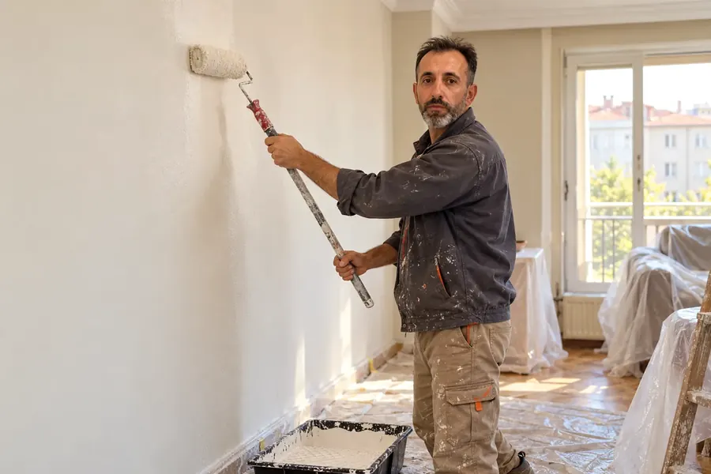
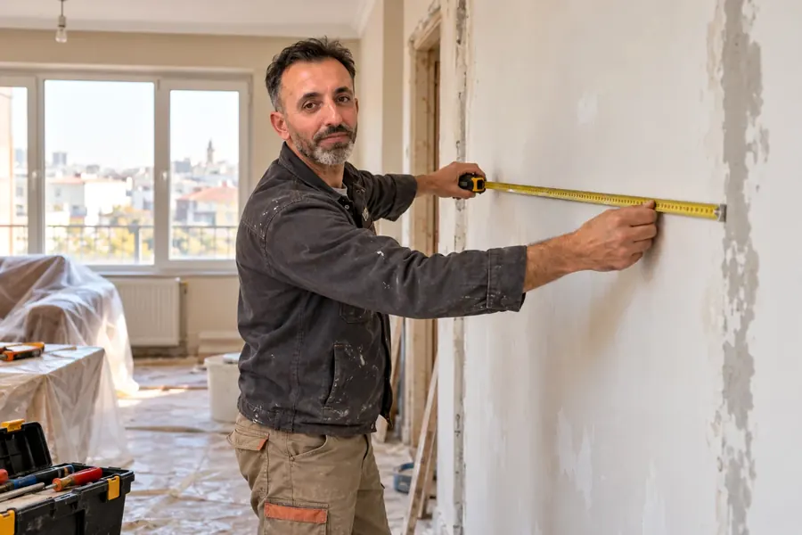
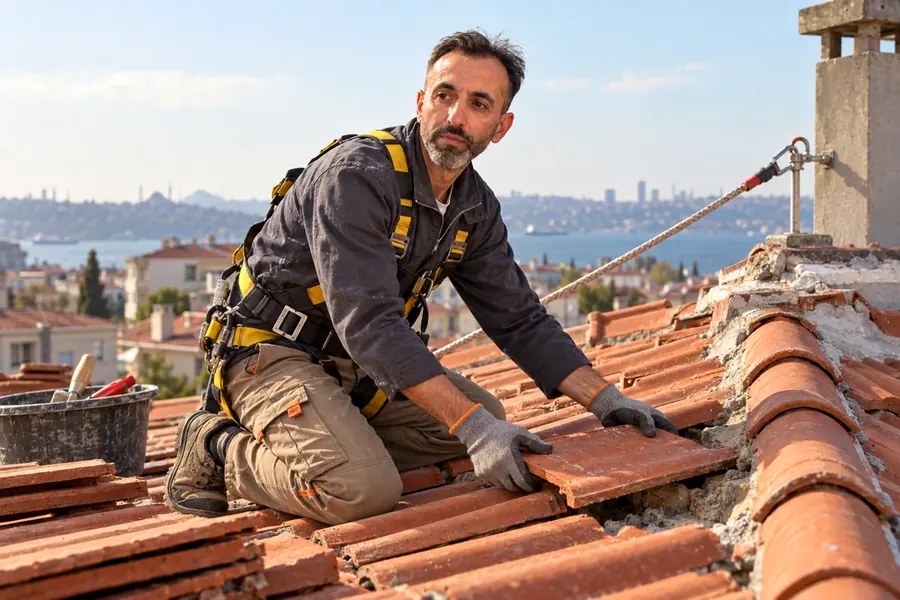
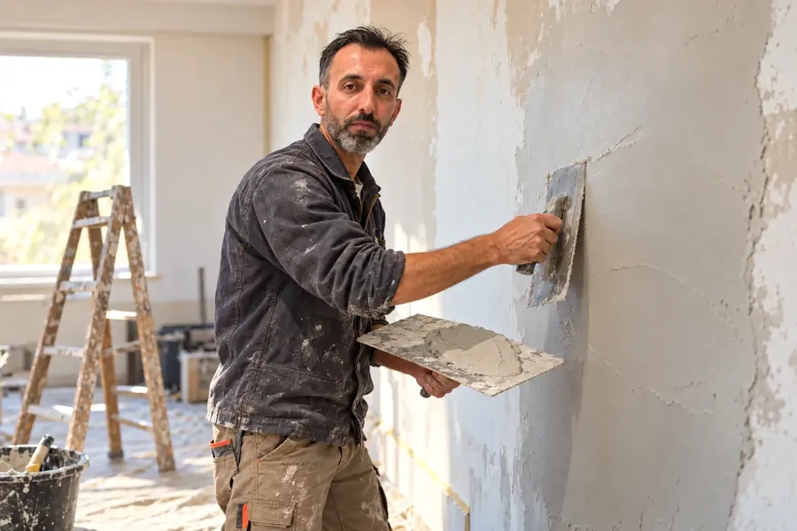
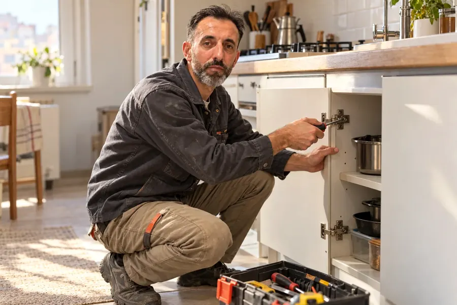
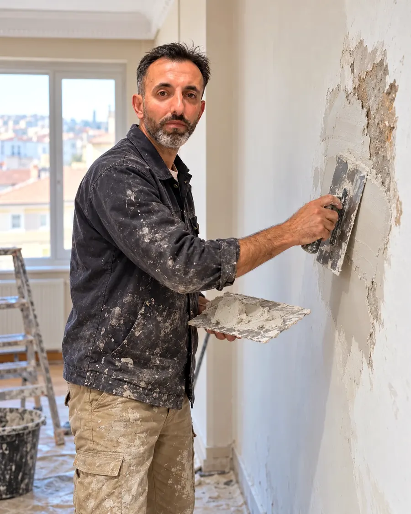

Boya & Badana
Duvar ve tavanlarda yüzey hazırlığı, macun, astar ve boya. Eşyalarınızı örtüyor, işi bitirince ortalığı temiz bırakıyoruz.
İstanbul’un mahalle ustası
İstanbul’da ev ve işyerleriniz için güvenilir, temiz ve özenli tadilat hizmeti.
Beyoğlu • Taksim • Şişli • Beşiktaş • Fatih ve çevresi
0542 800 32 63Telefonu Cengiz Usta açar.

Hizmetlerimiz
Bir odanın boyasından akan çatının tamirine kadar; ihtiyacınız olan işi birlikte değerlendirelim.
Duvar ve tavanlarda yüzey hazırlığı, macun, astar ve boya. Eşyalarınızı örtüyor, işi bitirince ortalığı temiz bırakıyoruz.

Ev ve işyerinde yenilenmesi gereken yerleri birlikte konuşuyor, ölçüsünü alıyor, işi ihtiyaca göre planlıyoruz.

Kırık kiremit, akan ve su alan çatılar, çatı bakımı. Önce sorunun nereden geldiğine bakıyor, sonra onarıyoruz.

Kabaran sıva, çatlak, rutubet izi ve dökülen tavanlar. Yüzeyi düzeltip boyaya hazır hale getiriyoruz.

Dolap kapağı, menteşe, küçük tamiratlar, rötuş boya. Kimsenin gelmek istemediği küçük işleri de yapıyoruz.
Sıva, boya yenileme, su alan çatı, küçük tamirat… Ne olduğunu anlatın, yapılabilir mi hemen söyleyelim.
WhatsApp’tan fotoğraf gönderin →
Cengiz Usta hakkında
Ben Cengiz Bostancı. Sivas Yapı adıyla İstanbul’da boya, badana, tadilat ve çatı tamiri işleri yapıyorum.
Aradığınızda telefonu ben açarım; işi birlikte konuşur, yerinde ya da fotoğraftan bakar, ne yapılması gerektiğini açıkça söylerim. İşe başladığımızda da başında ben olurum.
Evinize girerken eşyalarınızı örter, iş bitince ortalığı temiz bırakırım. Küçük ya da büyük, her işe aynı özeni gösteririm.
İşlerden kareler
Ön görüşmeden son rötuşa kadar yaptığımız işlerden sahneler. Büyütmek için görsele dokunun.
Bu bölümdeki görseller, yapılan iş türlerini anlatmak için yapay zekâ yardımıyla hazırlanmış temsili görsellerdir.
Neden Cengiz Usta?
Telefonu Cengiz Usta açar. Aracı yok, çağrı merkezi yok; işi yapacak kişiyle konuşursunuz.
İşi telefonda ya da yerinde birlikte konuşalım, ne gerektiğini net olarak söyleyelim.
Eşyalar ve zemin örtülür, iş bitince ortam toparlanır. Evinize kendi evimiz gibi bakarız.
Beyoğlu, Şişli, Beşiktaş ve Fatih başta olmak üzere merkez semtlere geliyoruz.
Hizmet bölgeleri
Beyoğlu ve Taksim başta olmak üzere aşağıdaki semtlerde boya badana, tadilat ve çatı tamiri için geliyoruz. Listede olmayan yakın bir semtteyseniz yine de arayın.
Sık sorulanlar
Her işin ölçüsü ve durumu farklı olduğu için fiyatı işi gördükten ya da fotoğrafını aldıktan sonra konuşuyoruz. WhatsApp'tan birkaç fotoğraf göndermeniz çoğu zaman yeterli olur.
Beyoğlu, Taksim, Şişhane, Tarlabaşı, Dolapdere, Piyalepaşa, Okmeydanı, Şişli, Mecidiyeköy, Beşiktaş, Fatih ve Topkapı başta olmak üzere İstanbul'un merkez semtlerine geliyoruz.
Evet. Tek odanın boyası, bir tavan onarımı ya da birkaç kiremidin değişmesi gibi küçük işler için de arayabilirsiniz.
Suyun geldiği yeri ve tavandaki izi fotoğraflayıp WhatsApp'tan gönderin. Sorunun kaynağına bakıp çatı tamirinin nasıl yapılacağını birlikte konuşalım.
Arayın ya da WhatsApp’tan yazın. İşin fotoğrafını gönderirseniz daha hızlı yardımcı olabiliriz.
0542 800 32 63İstanbul · Beyoğlu, Şişli, Beşiktaş, Fatih ve çevresi